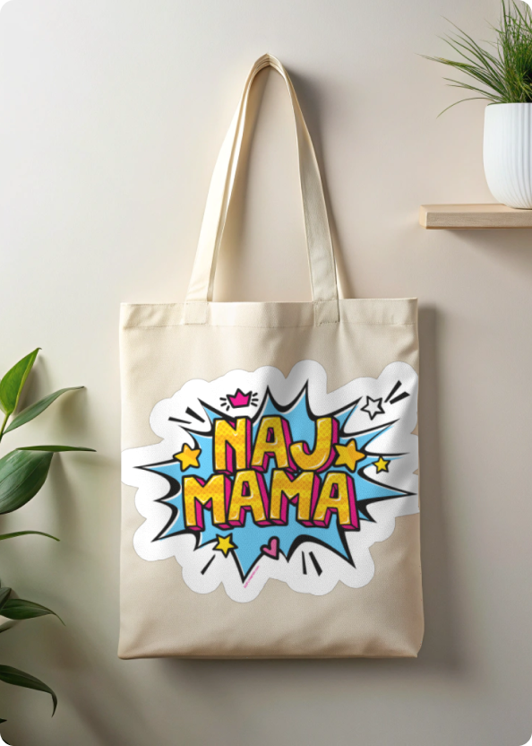
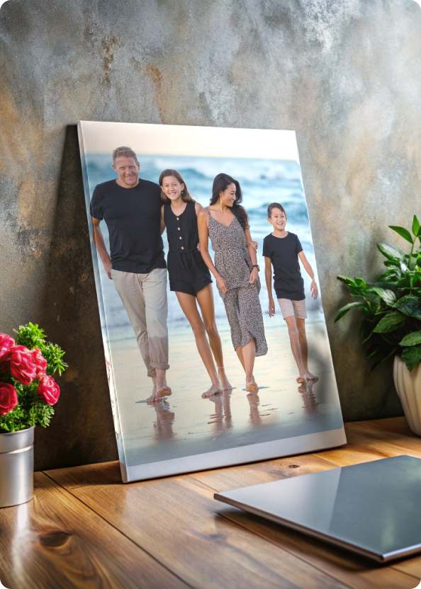
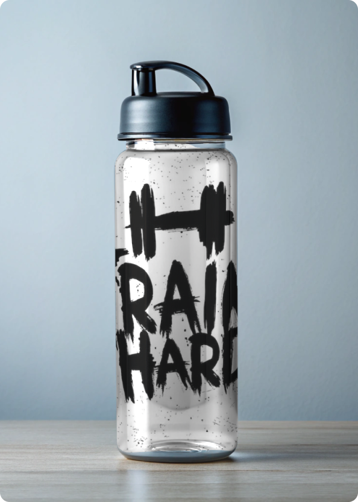
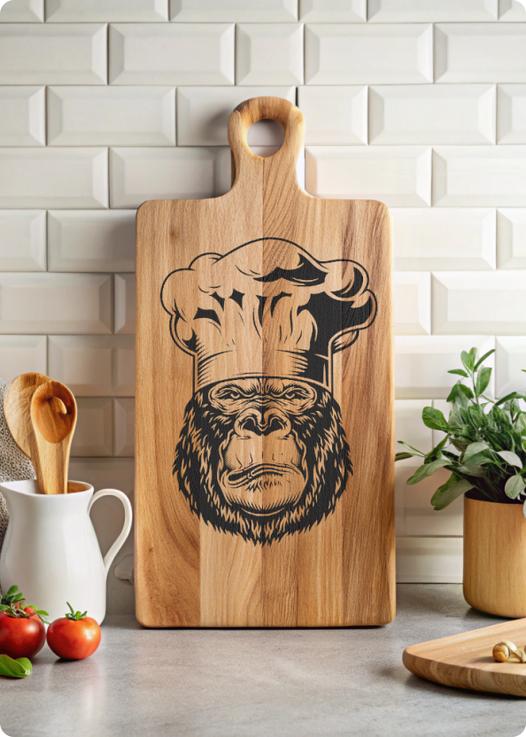
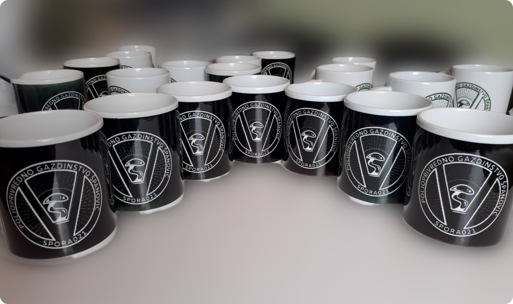
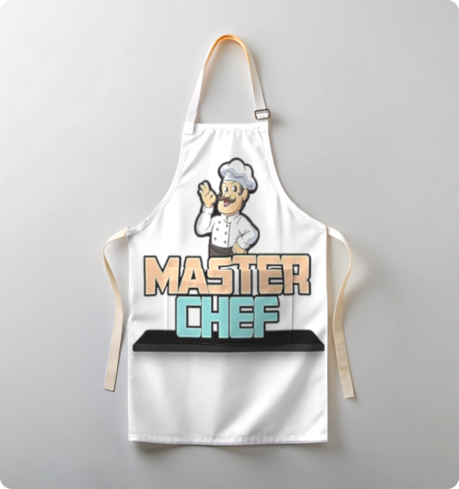

Sublimaciona Štampa – Kvalitetna i Trajna Personalizacija Proizvoda
Naša sublimaciona štampa pruža izvanredan kvalitet i dugotrajnost za širok spektar proizvoda. Bilo da vam je potrebna štampa na majicama, šoljama, jastucima, ili drugim reklamnim i promotivnim materijalima, sublimacija je idealan izbor. Ova tehnika omogućava štampu visokih detalja i živopisnih boja koje ne blede ni nakon dužeg korišćenja i pranja.
NAŠ PORTFOLIO



Sublimaciona štampa je savršena za personalizovane poklone, korporativne poklone, kao i promotivne proizvode za vašu firmu. Naš tim koristi vrhunsku opremu kako bi vaša ideja postala stvarnost. Bez obzira da li želite jedinstvene majice, promotivne šolje ili druge proizvode, sublimacija omogućava štampu na skoro svim materijalima poput poliestera, keramike i metala.
- Otporna na habanje i pranje
- Jarke boje i detaljna štampa
- Mogućnost štampe na velikom broju različitih materijala
- Idealno za personalizovane proizvode i poklone
Kontaktirajte nas danas i saznajte kako naša sublimaciona tehnika može pomoći da ostvarite sve vaše kreativne ideje!
KONTAKTIRAJTE NAS
